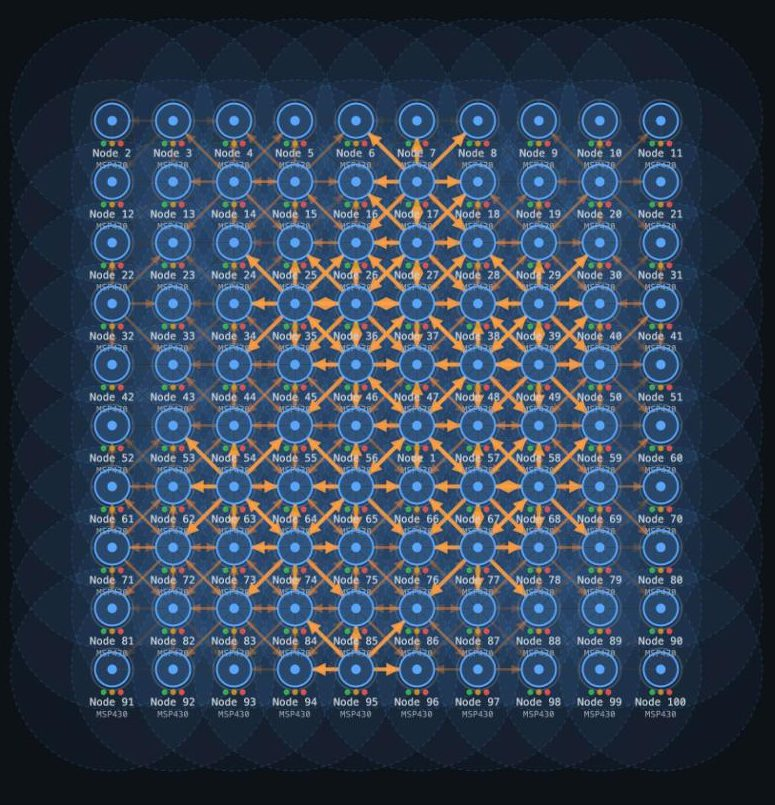
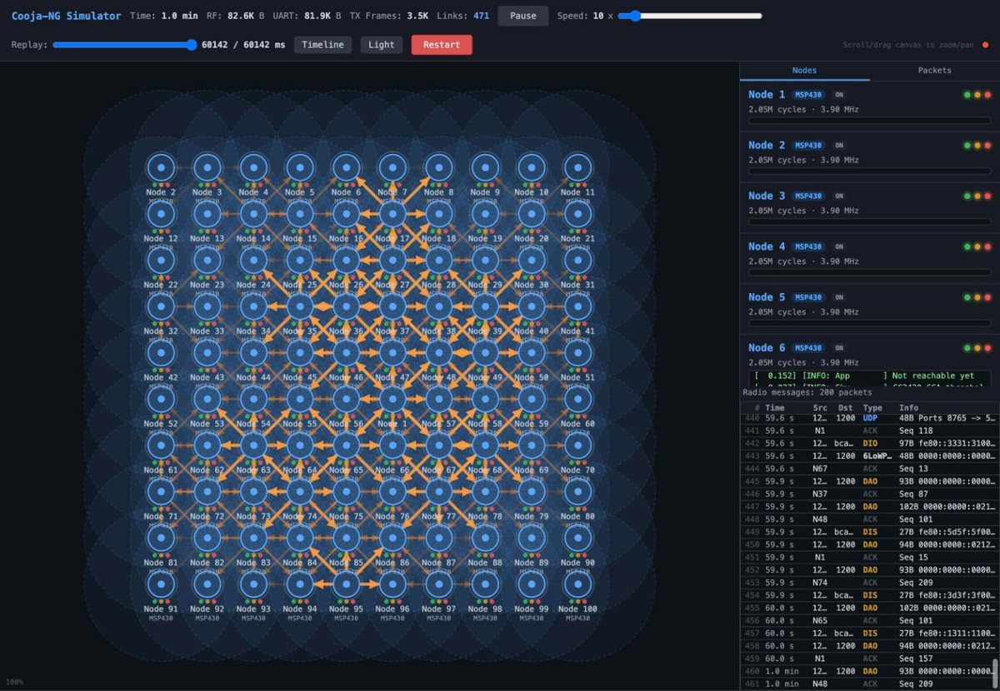

MSP430 · Cortex-M · RISC-V — 802.15.4, 6LoWPAN, RPL
Real Contiki-NG firmware. A whole network of it.
Cooja-NG emulates the motes Contiki-NG runs on — Tmote Sky, Z1, CC2538, nRF52840, nRF54L15 — instruction by instruction, on one simulated 802.15.4 radio medium with nanosecond time. It runs Contiki-NG's own Cooja tests headless, without a JVM, and the same seed gives the same run every time.
93/93 Contiki-NG Cooja tests
stock Contiki-NG and Zephyr builds, no simulator hooks
same seed, same run
no JVM · builds with make
BSD-3-Clause

Demos
Watch a network form.
Each demo is a recording of a real run. CI built the simulator from this site's commit, ran the scenario headless with --ui-record and kept what the web UI would have shown. The player replays the file in this tab: nothing runs on a server.
In the player: the scrubber seeks, the slider sets the speed (simulated seconds per second), Timeline shows each mote's radio activity, and the Packets tab decodes every frame. A hidden tab pauses playback until you come back.
For Contiki-NG
The Cooja test suite, headless. 93 of 93.
Contiki-NG's simulation tests are .csc files for Java Cooja. Cooja-NG converts each one, builds the firmware it needs from your tree, runs it with the test's own JavaScript and reports PASS or FAIL — from one binary, with no JVM and no GUI, roughly an order of magnitude faster than Cooja with MSPSim.
- Point it at a Contiki-NG tree.
tools/run-cooja-tests.shtakesCONTIKI_DIR(5.2 or develop), builds and caches the firmware, and runs everything, one category or one.csc. - Same seed, same run.
--seed Nis Cooja's--random-seed. The same seed gives a byte-identical simulation, and the project's CI diffs every engine change against main to keep it that way. - Fails loudly.A timeout, a
.cscfeature that is not implemented, a broken firmware build, a pattern that matches nothing: each is an error with a reason and a non-zero exit, never "0 tests, all OK". - Drop it into CI.Prebuilt releases for Linux and macOS, a GitHub Actions job to copy, and a documented
SIMULATOR=cooja-ngpatch for Contiki-NG's ownmake -C tests/…flow. - Script the run.
--scriptruns a command script against the simulation — send input,expectoutput,wait-untila condition — and the exit code says what failed: what a CI job, or a coding agent, needs from a test bench.
# a Contiki-NG checkout next to this repository $ export CONTIKI_DIR=~/contiki-ng $ tools/run-cooja-tests.sh === Cooja Test Suite (csim) === RUN 07-simulation-base/01-hello-world-sky PASS (0s) RUN 07-simulation-base/02-ringbufindex PASS (1s) RUN 09-ipv6/01-ping-lla-csma-w-rpl PASS (1s) RUN 14-rpl-lite/01-rpl-up-route PASS (1s) RUN 15-rpl-classic/07-rpl-random-rearrangement PASS (6s) … SKIP 17-tun-rpl-br/01-border-router-cooja (filtered) … === Results === Total: 93 Passed: 85 Failed: 0 Skipped: 8 Errors: 0 # the 8 skips are the border-router tests, which need a TUN # device: --with-tun (root, or setcap on tunslip6) runs all 93 $ tools/run-cooja-tests.sh 14-rpl-lite --seed 3
What's inside
The motes Contiki-NG runs on.
Each CPU is an interpreter (with a JIT for hot MSP430 and Thumb blocks) and each SoC a model of its peripherals, down to the radio's per-byte timing. Everything shares one event queue and one radio medium.
MSP430 16-bit · MSP430X
- Boards
- Tmote Sky, Z1, ESB, WisMote, MSP-EXP5438, CC430, MSP-EXP430FR5969
- MCUs
- F149, F1611, F2617, F5437, CC430F5137, FR5969
- Radio
- On the Tmote Sky: the CC2420 state machine with auto-ACK, CRC and TX power
CC2538 Cortex-M3
- Boards
- CC2538DK, OpenMote, Zolertia Firefly
- Radio
- On-chip RF core; the Firefly adds the off-SoC CC1200 for sub-GHz 802.15.4g
- Runs
- Contiki-NG RPL, TSCH (with low-power modes)
nRF52840 Cortex-M4F
- Boards
- nRF52840 DK, nRF52840 Dongle
- Radio
- Nordic 802.15.4 RADIO with EasyDMA and per-byte delivery
- Runs
- Contiki-NG RPL and TSCH, stock Zephyr 802.15.4 samples
nRF54L15 Cortex-M33 + RISC-V
- Boards
- nRF54L15 DK, Seeed XIAO nRF54L15
- Security
- TrustZone-M: SAU, SG/BXNS, SecureFault, the SPU's peripheral permissions
- Dual core
- The FLPR coprocessor (RV32EMC) running Contiki-NG's nrf-vpr port next to the M33
The kernel deterministic
- Time
- One event queue in (time, sequence) order, nanosecond resolution, Cooja's scheduling model
- Medium
- Unit-disk graph with interference ranges and TX power; plugin media such as burst loss
- Motes
- Emulated ELF, native Cooja motes, JavaScript motes, external processes
Around it tools
- Watch
- Live web UI, run recording and replay, pcap capture, energy estimation
- Debug
- Interactive shell and scripts, GDB stub, breakpoints and watchpoints
- Co-sim
- Renode as the clock master, esp32sim's ESP32-C6 as a mote on the medium
Your own runs
How replays work →
Record a run, replay it anywhere.
Add --ui-record to any run and you get the file these demos play: the web UI's stream, with the simulation unchanged. Put it next to player.html (the repository's ui/index.html) on any static host and open player.html?replay= plus its name.
./build/test_runner test configs/test-mixed-platform-rpl.yaml --ui-record mixed.json